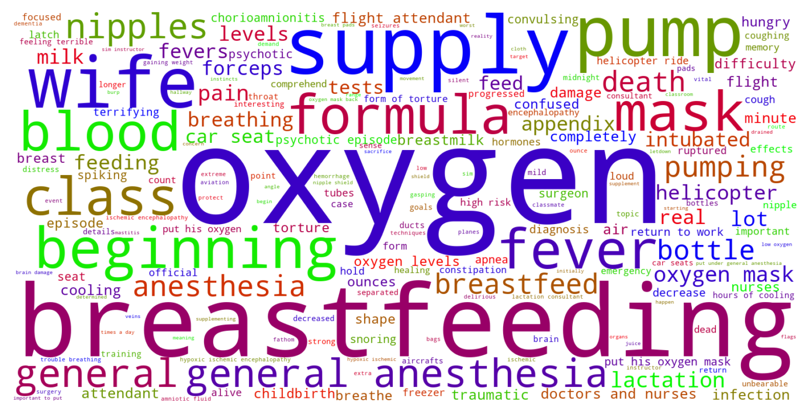

Jump to section:
Samples from Social CorpusHits per UMLS Alias on Social Corpus
Word Cloud Comparison
Embedding Space Comparison
Nearest Neighbors by Semantic Type
Related Analysed Concepts
Samples from Social Corpus
He experienced shoulder dysplasia for about 1 minute , but in that time my OB went into a bit of a panic because he was losing oxygen and blood vessels were becoming dilated .
Confidence: 0.688. Reddit link
A [ study done in 1995 and repeated with the same results in 2005 ]( found that healthy newborns buckled in correctly into safely installed car seats had oxygen levels that went as low as 83.7 % ( in the hospital , below 90 % is considered hypoxia and is treated ) , and the longer the baby spent in the car seat , the lower their oxygen levels go .
Confidence: 1.000. Reddit link
They often send me cards and stuff addressed to me with the last name Husband , and even send checks with that name ( whcih I cannot cash ) .
Confidence: 0.516. Reddit link
Seeing the effects of hypoxia on this man engaged my hormones .
Confidence: 0.540. Reddit link
I had the iv , the heart monitor , the catheter , two stomach monitors , oxygen and a blood pressure cuff on - I was feeling pretty claustrophobic and couldn't enjoy a lot of the early relief of the epidural .
Confidence: 0.794. Reddit link
I'm not really prone to clogs because Its been this way for a while but will doing this decrease my supply ?
Confidence: 0.718. Reddit link
The diagnosis was hypoxic ischemic encephalopathy ( HIE ) .
Confidence: 1.000. Reddit link
I have no problem supplementing with formula but I'm worried that my supply would just gradually decrease to nothing .
Confidence: 0.521. Reddit link
I've had people say that exercising decreased their supply as well .
Confidence: 0.544. Reddit link
She then underwent 72 hours of cooling to protect her brain and vital organs from damage from the hypoxia .
Confidence: 1.000. Reddit link
Hits per UMLS Alias on Social Corpus
-
decreased oxygen supply
13 hits
-
hypoxia
8 hits
-
hypoxic
6 hits
-
oxygen decrease
3 hits
-
deficiency oxygen
0 hits
-
oxygen deficiencies
0 hits
-
hypoxia disorder
0 hits
-
oxygen deficiency
0 hits
-
deficiencies oxygen
0 hits
Word Cloud Comparison
Keywords matching C0242184
Keywords matched against concept. Word size represents frequency.
Keywords co-occurring with C0242184
Co-occurrence is measured at the document-level (i.e. Reddit submissions). Frequencies are normalized to account for keywords common to all CUIs.
Embedding Space Comparison
T-SNE comparison for word embeddings learned from medical domain (EuroPMC) and social media (Reddit) independently.
Pearson correlation for union of closest 1000 neighbors: -0.178
Nearest Neighbors by Semantic Type
Most similar concepts in each of the selected UMLS semantic types. Based on concept embeddings from social corpus.
T046 (Pathologic Function)
-
C0242184
Decreased oxygen supply
1.000 Similarity
-
C4075684
Hypoxemia during surgery
0.743 Similarity
-
C0001122
Acidosis
0.651 Similarity
-
C0151686
Decreased growth
0.631 Similarity
-
C0034065
Pulmonary embolism
0.606 Similarity
-
C0243069
Hypoplasia
0.606 Similarity
-
C0034063
Pulmonary edema
0.604 Similarity
-
C3203358
Under breathing
0.602 Similarity
T042 (Organ or Tissue Function)
-
C0231940
Oxygenation
0.763 Similarity
-
C1160388
Respiratory tube development
0.677 Similarity
-
C0005778
Clotting
0.622 Similarity
-
C0013010
Brain laterality
0.585 Similarity
-
C0032058
Placentation
0.575 Similarity
-
C0042396
Vasospasm
0.573 Similarity
-
C0043229
Breathing work
0.555 Similarity
-
C0232741
Liver function
0.552 Similarity
T044 (Molecular Function)
-
C0369768
Oxygen saturation
0.756 Similarity
-
C0887940
Gene arrangements
0.473 Similarity
-
C1150342
Dopachrome rearranging enzyme
0.451 Similarity
-
C1749457
Ligands activity
0.447 Similarity
-
C1721104
Breaks dna
0.394 Similarity
-
C1704259
Pathways
0.381 Similarity
-
C0301647
Strand breaks
0.376 Similarity
-
C0086321
Cycle futile
0.364 Similarity
T201 (Clinical Attribute)
-
C0429622
Oxygen supply
0.754 Similarity
-
C0231832
Breathing rate
0.672 Similarity
-
C0012655
Predisposition
0.616 Similarity
-
C0007165
Heart output
0.594 Similarity
-
C3827727
Undetectable
0.551 Similarity
-
C0442709
End diastolic
0.544 Similarity
-
C0521982
Successful treatment
0.536 Similarity
-
C0005850
Blood volume
0.529 Similarity
T074 (Medical Device)
-
C3696780
Tube oxygen
0.731 Similarity
-
C0030067
Oxygenator
0.707 Similarity
-
C0462877
Oxygen giving set
0.689 Similarity
-
C0181744
Oxygen mask
0.650 Similarity
-
C0182109
Pulse oximeter
0.629 Similarity
-
C0182130
Oxygen monitors
0.619 Similarity
-
C0042497
Respirator
0.611 Similarity
-
C0030163
Pacemaker
0.561 Similarity
T184 (Sign or Symptom)
-
C0003578
Apnea
0.697 Similarity
-
C0242706
Oxygen stress breathing
0.697 Similarity
-
C0476273
Respiratory distress
0.679 Similarity
-
C0700200
Presyncope
0.613 Similarity
-
C0158369
Extremity swelling
0.607 Similarity
-
C0221161
Breathing shallow
0.596 Similarity
-
C0155002
Sudden loss vision
0.592 Similarity
-
C0332544
Abnormal weight gain
0.591 Similarity
T039 (Physiologic Function)
-
C0035203
Ventilation
0.692 Similarity
-
C1456599
Lungs breathing
0.590 Similarity
-
C3179159
Sedative effects
0.548 Similarity
-
C0005775
Circulation
0.534 Similarity
-
C0035245
Lung function
0.527 Similarity
-
C0015928
Fetal development
0.522 Similarity
-
C0743925
Fetal growth
0.508 Similarity
-
C3824789
Fetus development
0.507 Similarity
T061 (Therapeutic or Preventive Procedure)
-
C1260866
Blood oxygenator
0.689 Similarity
-
C0020674
Hypothermia induced
0.682 Similarity
-
C0419040
Reduction oxygen consumption
0.671 Similarity
-
C0554804
Assisted breathing
0.640 Similarity
-
C1563236
Still treatment
0.620 Similarity
-
C0035239
Respiratory therapy
0.612 Similarity
-
C0040590
Tracheotomy
0.609 Similarity
-
C0035273
Resuscitation
0.609 Similarity
T047 (Disease or Syndrome)
-
C0036690
Sepsis
0.669 Similarity
-
C0878544
Cardiomyopathy
0.659 Similarity
-
C0159020
Fits newborn
0.643 Similarity
-
C1566050
Severe jaundice neonate
0.640 Similarity
-
C0033036
Atrial premature contractions
0.638 Similarity
-
C0008495
Chorioamnionitis
0.636 Similarity
-
C0152101
Hypoplasia left heart
0.635 Similarity
-
C0521785
Deafness one ear
0.634 Similarity
T019 (Congenital Abnormality)
-
C0000768
Birth defect
0.663 Similarity
-
C0266449
Brain malformation
0.633 Similarity
-
C0332941
Corrected transposition
0.631 Similarity
-
C0027794
Neural tube defect
0.619 Similarity
-
C0149530
Congenital heart block
0.614 Similarity
-
C0265783
Underdeveloped lung
0.608 Similarity
-
C0243066
Atresia
0.606 Similarity
-
C0152021
Congenital heart disease
0.605 Similarity
T023 (Body Part, Organ, or Organ Component)
-
C0007776
Grey matter
0.652 Similarity
-
C0040578
Trachea
0.634 Similarity
-
C0026264
Mitral valve
0.624 Similarity
-
C0034052
Pulmonary arteries
0.621 Similarity
-
C0032005
Pituitary
0.620 Similarity
-
C0034086
Pulmonary valve
0.614 Similarity
-
C0225730
Left lung
0.613 Similarity
-
C0024109
Lung
0.608 Similarity
T048 (Mental or Behavioral Dysfunction)
-
C0234985
Cognitive decline
0.633 Similarity
-
C0003635
Apraxia
0.621 Similarity
-
C0563172
Dangerous plans
0.596 Similarity
-
C0036857
Severe mental handicap
0.577 Similarity
-
C3840214
High functioning autism
0.561 Similarity
-
C0270327
Bed wetting
0.558 Similarity
-
C0424295
Hyper
0.557 Similarity
-
C0025362
Mental retardation
0.555 Similarity
T049 (Cell or Molecular Dysfunction)
-
C4725191
Stop lost
0.615 Similarity
-
C0544885
Stop gain
0.522 Similarity
-
C1705285
Mutated
0.498 Similarity
-
C0002938
Aneuploidy
0.440 Similarity
-
C0040715
Translocation
0.434 Similarity
-
C0008625
Chromosomal abnormality
0.432 Similarity
-
C0008628
Del
0.403 Similarity
-
C0333714
Reciprocal translocation
0.379 Similarity
T031 (Body Substance)
-
C0225379
Upper respiratory fluid
0.612 Similarity
-
C0007806
Spinal fluid
0.551 Similarity
-
C0032105
Plasma
0.536 Similarity
-
C0162371
Cord blood
0.521 Similarity
-
C2983684
All tissues
0.483 Similarity
-
C0370199
Aspirate
0.480 Similarity
-
C0440739
Mixed venous blood
0.476 Similarity
-
C1549095
Brain cyst fluid
0.475 Similarity
T100 (Age Group)
-
C3494262
Extremely preterm infant
0.593 Similarity
-
C4551581
Full term baby
0.552 Similarity
-
C0021289
Newborn
0.543 Similarity
-
C4048294
Preterm baby
0.497 Similarity
-
C0682054
Mature adult
0.451 Similarity
-
C0021270
Baby
0.438 Similarity
-
C0596728
65 years old
0.376 Similarity
-
C0680085
Early adulthood
0.331 Similarity
T067 (Phenomenon or Process)
-
C0023983
Long term effects
0.585 Similarity
-
C0868945
Deterioration
0.567 Similarity
-
C0677038
Increase pressure
0.561 Similarity
-
C0035020
Relapse
0.504 Similarity
-
C0000894
Accelerations
0.486 Similarity
-
C0870455
Early childhood development
0.460 Similarity
-
C0034897
Recurring
0.457 Similarity
-
C1947910
Pulsed
0.447 Similarity
T018 (Embryonic Structure)
-
C0440731
Fetal brain
0.582 Similarity
-
C0231024
Neural tube
0.565 Similarity
-
C0553522
Cord placenta umbilical
0.530 Similarity
-
C0015965
Fetal
0.511 Similarity
-
C0041632
Umbilical artery
0.508 Similarity
-
C0015935
Fetal heart
0.495 Similarity
-
C0041637
Umbilical vein
0.492 Similarity
-
C1278988
Entire placenta
0.472 Similarity
T005 (Virus)
-
C0597404
Respiratory virus
0.580 Similarity
-
C3743464
Mycobacteriophage whirlwind
0.567 Similarity
-
C3768023
Mycobacteriophage conspiracy
0.551 Similarity
-
C0205939
Cold virus common
0.465 Similarity
-
C4415400
Phage wrath
0.431 Similarity
-
C0599652
Leaky virus
0.391 Similarity
-
C0086776
Parvovirus
0.391 Similarity
-
C4433204
King virus
0.379 Similarity
T054 (Social Behavior)
-
C0282657
Infibulations
0.579 Similarity
-
C0679426
Incompatibility
0.577 Similarity
-
C0871858
Pragmatic
0.487 Similarity
-
C0680215
Interdependency
0.464 Similarity
-
C0597728
Protected sex
0.443 Similarity
-
C0009990
Copulations
0.438 Similarity
-
C0680282
Toleration
0.428 Similarity
-
C4277668
Anti vaccine group
0.425 Similarity
T190 (Anatomical Abnormality)
-
C4025734
Anomaly scalp
0.577 Similarity
-
C0266785
Umbilical cord issue
0.551 Similarity
-
C3887590
Stricture ureter
0.523 Similarity
-
C0332482
Distortion
0.518 Similarity
-
C0332472
Fragmentation
0.495 Similarity
-
C0016169
Sinus
0.494 Similarity
-
C0332447
Anomaly
0.490 Similarity
-
C0019294
Inguinal hernia
0.486 Similarity
T034 (Laboratory or Test Result)
-
C5201036
Low platelets
0.577 Similarity
-
C0019029
Hemoglobin levels
0.530 Similarity
-
C0428255
Lead levels
0.504 Similarity
-
C2266672
Clotting time finding
0.488 Similarity
-
C0741132
Antibody positive
0.480 Similarity
-
C0241988
M spike
0.466 Similarity
-
C3898879
Triple positive
0.453 Similarity
-
C0580945
Blood pressure standing
0.452 Similarity
T060 (Diagnostic Procedure)
-
C0150496
Heart monitoring
0.573 Similarity
-
C0033053
Prenatal diagnoses
0.554 Similarity
-
C0278336
Fetal ecg
0.540 Similarity
-
C0007208
Cardiotocography
0.524 Similarity
-
C0013798
Ekg
0.523 Similarity
-
C0015945
Fetal monitoring
0.517 Similarity
-
C0920688
Cancer diagnosis
0.511 Similarity
-
C0596473
Detection early
0.508 Similarity
T037 (Injury or Poisoning)
-
C0160420
Kidney injury
0.570 Similarity
-
C0270611
Brain damage
0.554 Similarity
-
C0332666
Injuries old
0.542 Similarity
-
C0005604
Traumatic birth
0.527 Similarity
-
C0018843
Overheating
0.514 Similarity
-
C0018674
Head injury
0.511 Similarity
-
C0010957
Damage
0.510 Similarity
-
C0876926
Traumatic brain damage
0.503 Similarity
T079 (Temporal Concept)
-
C1550731
Week continuous
0.562 Similarity
-
C2936491
Peripartum
0.552 Similarity
-
C0205178
Acute
0.547 Similarity
-
C1550732
Day continuous
0.546 Similarity
-
C5204315
Time second temperature
0.534 Similarity
-
C0205420
Coincident
0.523 Similarity
-
C0039155
Systolic
0.512 Similarity
-
C0032790
After surgery
0.502 Similarity
T032 (Organism Attribute)
-
C0575118
Normal posture
0.559 Similarity
-
C0805393
Breathing spontaneous
0.558 Similarity
-
C0751992
Fetal weight
0.550 Similarity
-
C0005612
Weight baby
0.546 Similarity
-
C0005885
Body composition
0.525 Similarity
-
C0949285
Antibiotic resistance
0.505 Similarity
-
C0019425
Heterozygous
0.500 Similarity
-
C0220898
Susceptible
0.499 Similarity
T059 (Laboratory Procedure)
-
C0545131
Cbc diff
0.558 Similarity
-
C0368930
Clotting time
0.558 Similarity
-
C0023901
Liver tests
0.538 Similarity
-
C0200896
Cytogenetic studies
0.531 Similarity
-
C0032181
Platelet count
0.523 Similarity
-
C0200633
Seg blood count
0.513 Similarity
-
C0368676
Antibody screen
0.503 Similarity
-
C0014772
Counting rbc
0.494 Similarity
T041 (Mental Process)
-
C2370884
Emotional regulation
0.543 Similarity
-
C0001721
Affect
0.541 Similarity
-
C0679035
Cognitive development
0.534 Similarity
-
C0003808
Arousal
0.521 Similarity
-
C0563143
Functioning mental
0.514 Similarity
-
C0004448
Aware
0.505 Similarity
-
C0009240
Cognitive function
0.503 Similarity
-
C0043012
Vigilant
0.496 Similarity
T101 (Patient or Disabled Group)
-
C4727511
Women who have mastectomy
0.518 Similarity
-
C0682161
Dually diagnosed
0.490 Similarity
-
C0683995
Drug exposed child
0.484 Similarity
-
C0008098
Child hospitalized
0.481 Similarity
-
C1516213
Cancer patient
0.472 Similarity
-
C1516231
Cancer survivor
0.468 Similarity
-
C1456639
Living with cancer
0.465 Similarity
-
C0233363
Monoamniotic twins
0.453 Similarity
T195 (Antibiotic)
-
C0013090
Doxycycline
0.496 Similarity
-
C0003232
Antibiotics
0.474 Similarity
-
C0723285
Septa
0.460 Similarity
-
C0279516
Antibacterial
0.439 Similarity
-
C0718575
Antibiotics ear
0.404 Similarity
-
C0718950
Biomox
0.357 Similarity
-
C1564058
Roxi basics
0.351 Similarity
-
C0002645
Amoxicillin
0.338 Similarity
T007 (Bacterium)
-
C0018154
Gram positive bacteria
0.480 Similarity
-
C0022828
L forms
0.425 Similarity
-
C3801085
Enorma
0.403 Similarity
-
C0995705
Frankia
0.402 Similarity
-
C0004611
Bacteria
0.398 Similarity
-
C0995648
Genus quinella
0.396 Similarity
-
C0597134
Flora oral
0.384 Similarity
-
C0036111
Salmonella
0.367 Similarity
T200 (Clinical Drug)
-
C0723917
Triple antibiotic ointment
0.451 Similarity
-
C4048176
Oxytocin injection
0.438 Similarity
-
C3218395
Papain pill
0.437 Similarity
-
C1163679
Injections sterile water
0.422 Similarity
-
C3216620
Progesterone vaginal product
0.412 Similarity
-
C0307304
Pitocin injection
0.395 Similarity
-
C5222490
Progesterone injection
0.390 Similarity
-
C1242003
Mol iron tablets
0.373 Similarity